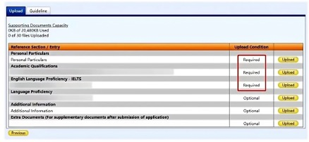

Individual files should not exceed 2Mb, all files should not exceed 20Mb, document files should be A4 size, and use English as the file name.
The system will prompt to upload files in accordance with the information related to education and work filled out earlier.
If you are uploading photo albums, music, etc., please contact the Admissions Office directly and send them to the designated email address.
Once all documents are uploaded, click on "Print Submission Form" to check if the information is correct, as it cannot be changed once submitted.
After confirming, click "Submission Form" to submit, and then you will enter the application fee payment page. When the payment is completed, the online application is complete.
单个文件不超过2Mb，所有文件不超过20M，文档文件为A4大小，并使用英文作为文件名。
系统会提示，按照前面填写的教育和工作等相关信息上传文件。
如果上传相册、音乐等作品，请直接联系招生办公室，并发送到指定的邮箱中
所有文件上传以后，点击“Print Submission Form”检查信息是否正确，因为一旦递交了就不能修改。确认后，点击“submission Form”提交，成功后会进入申请费的付费页面。完成付款即代表网申完成。
